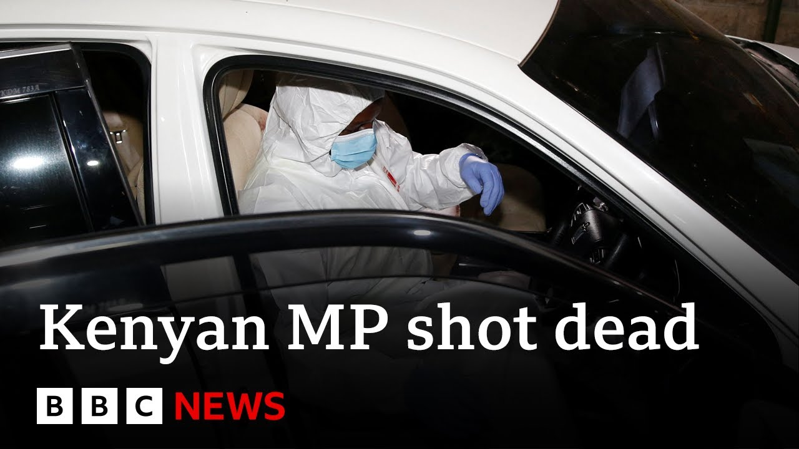

来B站一起耍【Global每日英语简报】
【肯尼亚议员在内罗毕遭“针对性”枪杀 | BBC新闻】
Summary: A Kenyan MP was ambushed and killed in a targeted attack in Nairobi, sparking nationwide shock. The assailants, on a motorbike, shot him at close range before fleeing. The MP had previously reported death threats.
摘要： 肯尼亚一名议员在内罗毕遭遇针对性伏击身亡，举国震惊。袭击者骑摩托车近距离枪杀他后逃离。该议员此前曾报告过死亡威胁。

⏱️ Estimated Reading Time: 3 min
There's been a horrified reaction in Kenya to the gunning down of a member of parliament on one of Nairobi's main roads.
肯尼亚对一名议员在内罗毕一条主干道上遭枪杀感到震惊。
Charles Anongo Were was ambushed on Wednesday by gunman on a motorcycle.
查尔斯·安翁戈·韦尔于周三遭摩托车上的枪手伏击。
Police say the killing was targeted.
警方称此次杀害是针对性行动。
Well, let's go live now to Nairobi and to an Soy, our BBC deputy Africa editor.
现在让我们连线内罗毕的BBC非洲副主编安索伊。
And thank you very much for joining us.
非常感谢您的加入。
This was obviously uh an extremely shocking and daring attack given that it happened in daylight in Kenya's capital.
这显然是一起极其令人震惊且大胆的袭击，因为它发生在肯尼亚首都光天化日之下。
That's right.
确实如此。
Um it happened at a busy roundabout that is usually manned by police.
嗯，事件发生在一个通常有警察值守的繁忙环岛。
There is CCTV uh there which uh the police have access to and we understand that he was shot at at close range.
那里有监控，警方已调取，我们得知他是被近距离枪击的。
Uh police have said that it was it appears predetermined, premeditated.
呃，警方表示这似乎是预先策划、有预谋的。
Um and there were two people on motorbike on a motorbike that had been uh trailing uh the MP as he left Parliament.
嗯，有两名骑摩托车的人一直尾随这位议员离开议会。
Um and uh his driver and personal assistant were unharmed.
呃，他的司机和私人助理未受伤。
So clearly they only went for the MP, shot him at close range and disappeared.
显然他们只针对议员，近距离枪击后便消失了。
Um the aids then rushed him to hospital which is not uh far away from where the incident happened perhaps just a few minutes drive uh but he was pronounced dead on arrival.
呃，助手们迅速将他送往医院，距离事发地不远，可能仅几分钟车程，但他到院时已宣告死亡。
And what potential motives are police exploring?
警方正在调查哪些潜在动机？
I understand the MP had previously uh complained of threats to his life before.
我了解到这位议员此前曾抱怨过生命受到威胁。
That's right.
没错。
In recent weeks, the MP has spoken has spoken publicly about threats to his life.
最近几周，这位议员公开谈及对其生命的威胁。
Um, and repeatedly he has said that um he he he is likely to be shot at.
嗯，他多次表示自己可能遭枪击。
Uh but he also expressed confidence that because of his faith he would be unharmed.
但他也因信仰坚信自己会安然无恙。
Um and he did mention some names which I believe police would be investigating.
嗯，他确实提到一些名字，我认为警方会调查。
Uh now uh so it has come as a shock to the country.
呃，现在这一事件震惊全国。
He comes from the western region of the country, a supporter of uh the veteran opposition leader Rainga who is currently in an arrangement with the president and so he's been supporting um the opposition leader who's now working with the with the president.
他来自该国西部地区，是资深反对派领袖莱因加的支持者，莱因加目前与总统达成合作，因此他一直支持这位现与总统共事的反对派领袖。
Um the issues that the MP has raised previously have come uh to um to the four uh since his killing last night and police are treating this as an assassination.
嗯，该议员此前提出的问题在其昨晚遇害后浮出水面，警方将此视为暗杀。
Okay, an thank you very much an Soy, our deputy Africa editor there in Nairobi for us.
好的，非常感谢我们在内罗毕的非洲副主编安索伊。